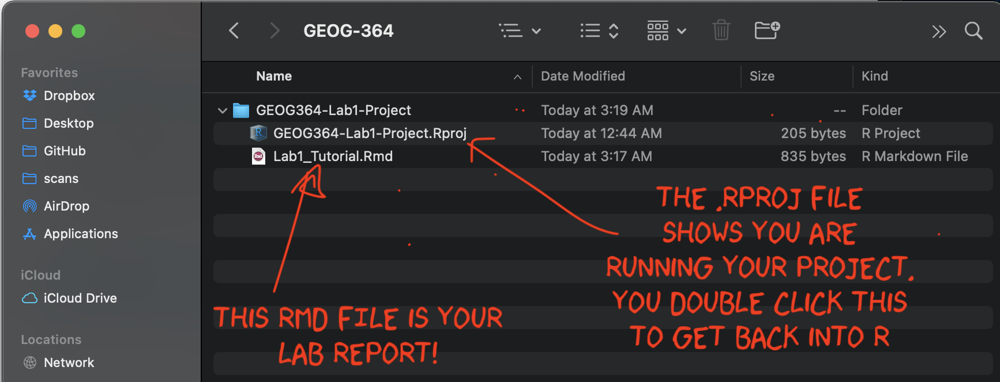
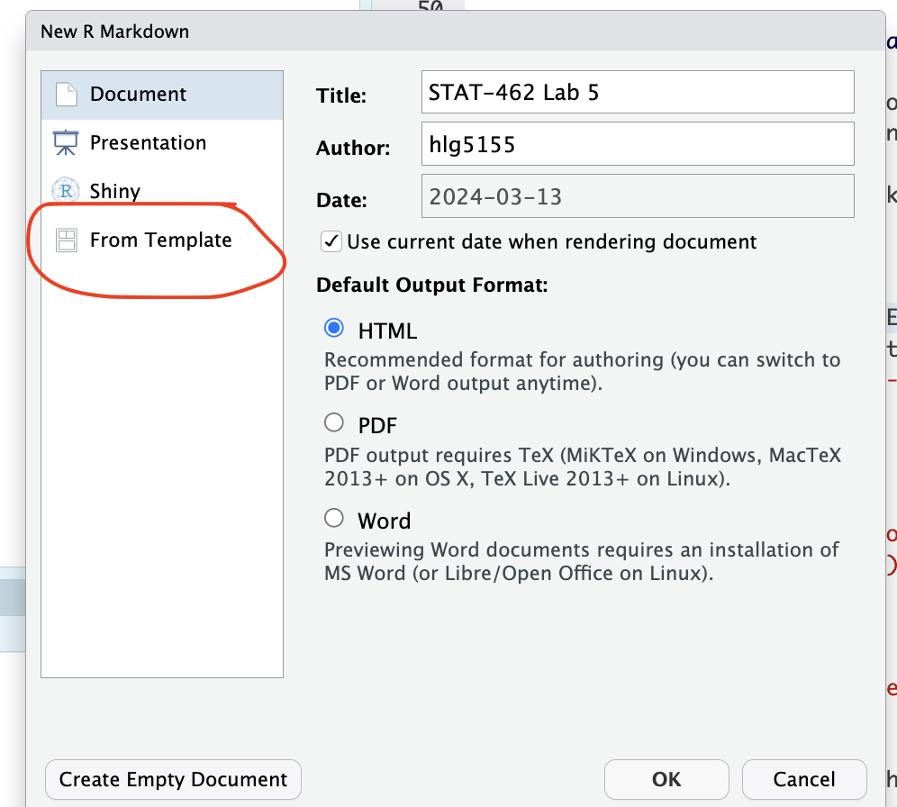
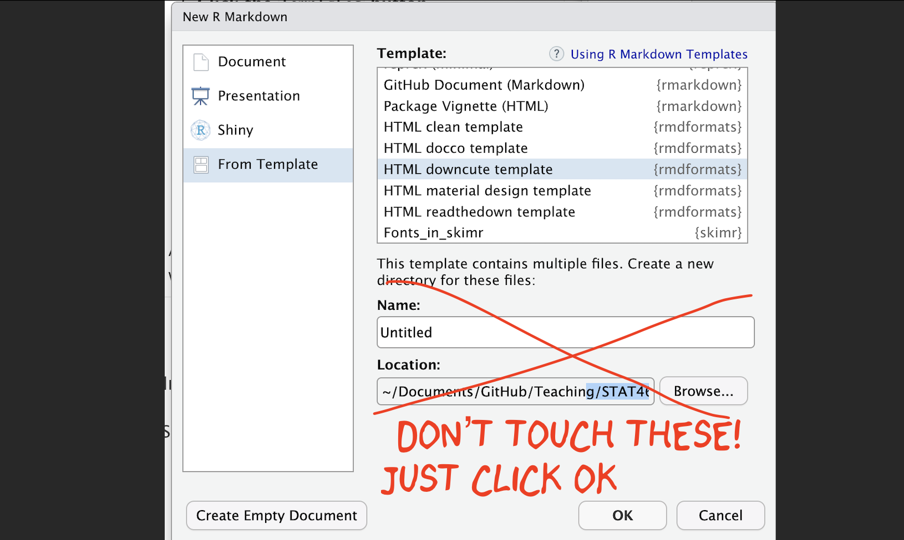

R-Markdown is especially powerful because it is easy to convert your reports into many different templates. We do this via changing the YAML code at the top. Luckily, you do not have to remember all the YAML commands yourself.
1 Creating a basic R-Markdown document
Expand to show instructions
To create a new R Markdown document

- Go to
File→New File→R Markdown... - Choose a document type (HTML, PDF, or Word). For
now, | select
HTML. - Give your document a title and specify the author as | your Email ID e.g. hlg5155
- Click
OK - If this is your first time ever doing this or you’re running a new POSIT-Cloud project, then R-studio might ask to download some packages before it can do this this. Say yes.
- A new file should appear on your screen. At the top of that window (by the knit button, there is a save button. Save it as something relevant INSIDE YOUR PROJECT FOLDER!
RStudio will generate a default R Markdown file with an example of formatted text and an embedded code chunk.
1.1 Further editing the YAML code
There are many different options you can add to a basic RmD file, by changing the YAML code at the top. For example you can add a table of contents, make the auto-hide (code folding) or change the theme.
Click here to see examples of how to do this: https://psu-spatial.github.io/Stat462-2025/CH2_EACHLAB.html#34_Editing_YAML
1.2 Important
Before you continue, on your computer (outside R-Studio), go to your project folder
MAKE SURE THE RMD FILE SAVED IN YOUR PROJECT FOLDER. Also, check you didn’t accidentally create a load of sub-folders inside your lab. If so, delete/move things around until it looks like this.

2 Using a custom R template from a package
Expand to show instructions
There are also now several package which contain professional markdown templates. Common examples include
- The
rmdformatspackage: See example themes here: https://github.com/juba/rmdformats - The
prettydocpackage: See example themes here: https://prettydoc.statr.me/themes.html
To use one of these packages:
Alternatively, you can replace your YAML code with the suggested code from that theme. |
 |

2.1 Further editing the YAML code
There are many different options you can add to a basic RmD file, by changing the YAML code at the top. For example you can add a table of contents, make the auto-hide (code folding) or change the theme.
The easiest way to see what is available for your particular theme is to go to the package website and take a look at the documentation (scroll down). For example
- The
rmdformatspackage has various options for each theme https://github.com/juba/rmdformats - Similarly the
prettydocpackage has more description here https://prettydoc.statr.me/themes.html
You can also just try and edit the YAML code, press knit and see if it works. Click here to see examples of how to do this: https://psu-spatial.github.io/Stat462-2025/CH2_EACHLAB.html#34_Editing_YAML
NOTE, PrettyDocs does NOT allow a floating table of contents.
2.2 Important!
Sometimes rmdformats makes an extra subfolder and puts your report in there.
So before you continue, on your computer (outside R-Studio), go to your project folder
MAKE SURE THE RMD FILE SAVED IN YOUR PROJECT FOLDER. Also, check you didn’t accidentally create a load of sub-folders inside your lab. If so, delete/move things around until it looks like this.
3 Using ChatGPT for custom templates
Finally, we can now use ChatGPT to help make custom YAML code for whatever template you want or to help you fix broken themes/YAML code. It will almost certainly take interations - and look at github or google cool markdown formats for examples.
For example,
How to make a template that includes a logo/header, and a discussion about what styles.css is https://chatgpt.com/share/67e44d44-8254-800f-a2bf-b447464a4f4a
A silly template for a PI who likes penguins using a new google font https://chatgpt.com/share/67e44f17-a760-800f-850e-479c63776883